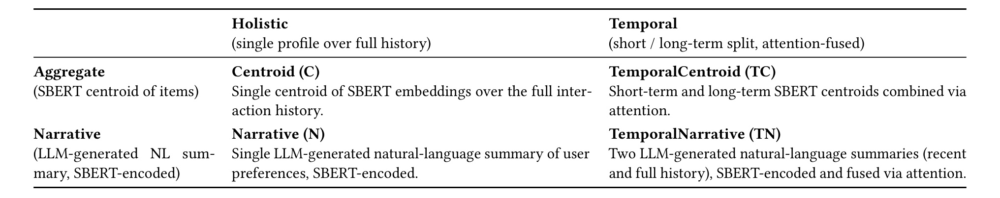
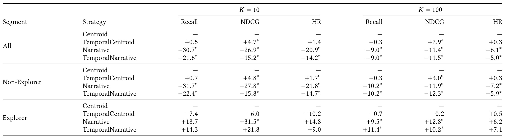
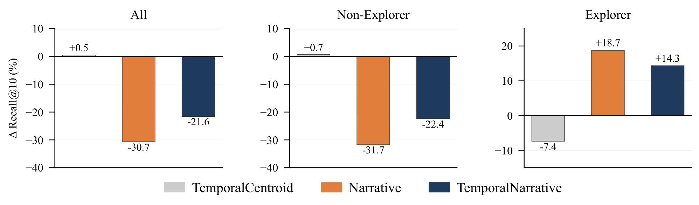
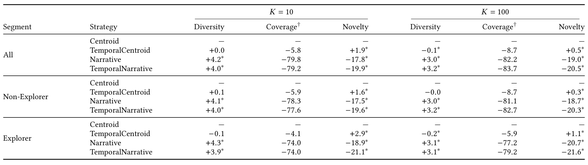
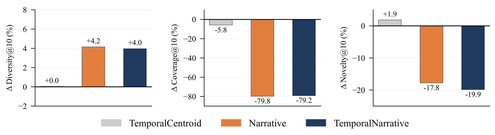
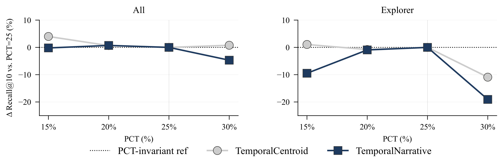

StreamingProfiles：大模型用户画像何时值得投入
这篇论文研究大模型生成的用户画像何时优于简单的历史向量聚合，英文题为 When LLM-Based User Profiling Adds Value in Production Streaming Recommendation，中文可译为《基于大模型的用户画像何时能为生产流媒体推荐带来价值》。作者为 Milad Sabouri、Neeraj Sharma、Sardar Hamidian 和 Shaghayegh Agah。第一作者同时隶属德保罗大学与 Comcast Technology AI，其余作者来自 Comcast Technology AI。论文于 2026 年 9 月 23 日公开 arXiv v1，本笔记记录于 2026 年 9 月 25 日；论文入口。本轮未核验到独立公开代码或数据集，原文报告生产数据上的离线实验，没有线上路由收益或定量成本实验。
基于大模型的用户画像生成比聚合方法昂贵得多，因此必须回答：什么时候额外成本是值得的？
1. 背景和问题
1.1 一份更会说话的画像，不一定更会排序
流媒体推荐的用户画像承担压缩历史的工作：系统不可能在每个候选打分时重新完整阅读一个人过去看过的全部电影、剧集和体育节目，因此要把这些行为变成可以缓存、更新和送入排序模型的表示。传统内容推荐的一条简单路线是先把每个项目的标题和简介编码为语义向量，再对用户消费过的项目向量求平均。另一条路线先让大模型读观看历史，写出“偏好哪些题材、叙事风格和内容类型”的自然语言摘要，再把摘要编码为向量。两者最终都可以进入相同的排序接口，但信息损失的方式不同：均值保留每次历史行为的数值贡献，摘要保留生成模型认为值得概括的主题。
这篇论文最有价值的出发点，是没有预设“更强的语言理解一定带来更强的推荐”。用户看到的文字摘要可能很流畅，也可能比向量更容易解释，但排序使用的是摘要经过句子编码器后的向量。中间经历了从项目集合到自然语言、再从自然语言到向量的两次转换。一个听起来准确的概括，仍可能删掉关键项目细节、放大常见题材、把少数但重要的兴趣写成泛泛表述。最终要检验的是未来消费项目能否被排到前面，而不是画像文案是否自然，或是否让人觉得大模型理解了用户。论文把这一区别落实为可控的实验设计。
生产流媒体环境进一步放大了问题。作者强调，与许多公开电商基准相比，生产目录更大、用户历史更深、行为更加异质。有的人反复消费熟悉节目或相邻内容，有的人下一阶段会看训练历史中从未出现过的项目。前一类用户需要表示精确保留既有偏好，后一类用户可能需要从具体项目向更抽象主题进行外推。两类需求未必能由同一份画像同时满足。如果只看全体用户的平均指标，会把较小群体的收益掩盖掉；如果只挑收益最明显的群体，又会把局部现象误报为普遍优势。本文同时报告总体、非探索者和探索者，是为了避免这两种偏差。
1.2 表示形式和时间建模应分开比较
本文研究的不仅是“均值还是摘要”，还有“全历史一份画像，还是近期与长期两份画像”。在许多系统方案里，使用大模型时顺手加入时间切分、注意力融合甚至更强的排序头，最终即使指标变好，也无法知道收益来自哪里。作者采用两个因素交叉的设计，形成四个条件：整体均值画像、时间融合均值画像、整体语言摘要画像、时间融合语言摘要画像。四种条件使用相同项目文本编码器、相同下游打分网络、相同训练和评测协议。这样至少在内容推荐这个固定范式内部，可以把差异更直接地归到画像构造。
这是一项系统性的比较研究，而不是提出一个全新的大型推荐架构。大模型生成摘要、句向量编码、历史均值聚合和注意力融合都来自已有方法传统。创新主要在于把这些部件放入同一个生产数据评估框架，并发现收益有明确的人群条件，还发现“单条列表更分散”与“整个系统更集中”可以同时发生。阅读时应围绕这些可验证的实验事实，而不是把四种已有构造重新包装成原创模型。作者也明确排除了 SASRec 和 BERT4Rec 等序列或协同推荐方法，以防信号来源变化干扰比较。
这种排除有合理性，也限制了结论的外推范围。本文能回答的是同一种内容排序链路中，画像表示如何影响效果；它不能回答最好的内容画像是否胜过成熟的协同排序系统，也不能证明大模型摘要是下一代推荐的最优入口。真实生产系统可能已有用户、项目、序列和场景特征，加入摘要后的边际收益会不同。尤其当原系统已经建模重复消费和时间动态时，均值画像与摘要画像的相对差距可能被扩大或缩小。控制变量带来内部可解释性，不等于完成了完整工业基线比较。
1.3 探索者是分析标签，不是已知的在线身份
论文把探索者定义为：测试历史中的项目，没有任何一个出现在训练历史中。只要存在一个重叠项目，就归入非探索者。这个定义使用未来测试行为，是事后分析标签。它并不是注册属性、历史兴趣类型或上线时天然可用的开关。作者的目标是识别效果异质性，再讨论是否可能训练一个使用当时可得特征的预测器。因此，“对探索者有帮助”与“已经可以把用户准确路由到大模型画像”之间，还隔着一个独立预测问题和一组线上验证。
此外，项目不重复并不严格等于语义偏好发生重大变化。一个人接着看同一题材的新电影，测试项目可以全部是新项目，但兴趣主题仍然稳定；另一个人重看某个节目，同时探索多个陌生领域，也会因为一次重叠而进入非探索者组。这个标签直接刻画的是项目级训练测试重叠，不能被解释为心理学意义上的探索倾向。它适合作为本次实验的可复核分层条件，却不足以独立证明用户发生兴趣迁移。论文在讨论中借助语义抽象解释结果，应与这个操作性定义保持区分。
成本问题同样不能省略。均值画像可利用预先缓存的项目向量，更新时只需要聚合；摘要画像还需要一次或多次大模型生成、文本处理和重新编码。刷新频率、历史长度、用户规模都会改变额外开销。本文没有量化这些开销，也没有给出收益与成本的盈亏平衡点。它首先提供的是“不要默认给所有用户使用昂贵画像”的经验证据。要把这种发现转成资源调度政策，仍需测量真实刷新成本、路由误判损失和覆盖度约束。这些缺口不抹去比较研究的价值，却决定了它目前更适合作为实验设计依据，而不是可直接复制的上线方案。
2. 方法
2.1 四种画像的受控比较
原文方法从统一的任务接口开始。用户有按时间排列的观看历史，每个项目都有标题和简介。推荐任务为每个用户给目录中的项目打分，再取最高的若干个。共同的项目编码器将文本映射为向量，唯一变化的是用户画像如何从历史生成。表征轴区分数值聚合与自然语言摘要，时间轴区分单个全历史表示与两个时间尺度的融合。这两个因素并不是独立训练任务，而是四个实验条件；它们共同接受同样的排序监督。

Table 1 的行表示信息压缩形式，列表示时间处理方式。左上角 Centroid 对所有历史项目的 SBERT 向量求均值，是后续相对变化的基准；右上角 TemporalCentroid 对最近一段行为和全历史分别求均值，再学习融合权重。左下角 Narrative 先生成一份描述整体偏好的文字摘要，再用 SBERT 编码；右下角 TemporalNarrative 则生成近期与全历史两份摘要，编码后融合。这样读表，可以同时比较横向加入时间处理后的变化，以及纵向把均值替换为生成摘要后的变化。四个单元格并非四个不同的候选召回器，最终都产生同维度画像交给共同打分网络。
这里最容易误读的是右列的“短期、长期”。长期输入仍是全部历史，近期行为也在其中，并不是把最近部分移走之后剩下的旧历史。它比较的是局部近期表示与全局历史表示，而不是两个互斥时间区间。其次，两种时间画像采用同样形式的注意力融合，并不表示每位用户的权重相同，也不表示两种方法训练后学到了数值相同的参数；共同的是架构和参数化方式。表中的结构控制帮助解释差异来自表示，但没有消除摘要生成所依赖的模型、提示与文本长度等选择。要复现四个条件，需要固定这些输入和训练细节，不能只保证最终向量维度相等。
因此这张表支持的主张是“可以在一个受控接口中比较画像构造”，不是“生成模型与聚合模型拥有完全相同的计算预算”。语言摘要明显增加预处理成本，时间摘要还需要两次提示生成。实验保持排序链路一致，是为了分离画像质量，而不是为了证明成本等价。这个区分也说明为什么本文后面的准确率负结果很有意义：更复杂的表征制作过程，没有在多数用户身上换来更强的排序效果；同时，少数人群的正结果又使它值得继续作为可选择的表示，而非简单放弃。统一打分函数由原文公式（1）给出：
符号解释：$u$ 是用户，$i$ 是候选项目，$m_i$ 是项目标题与简介组成的文本，$e_i$ 是其语义向量，$p_u$ 是用户画像，$\Vert$ 表示向量拼接，$f_{\theta}$ 是参数为 $\theta$ 的两层 MLP，$s(u,i)$ 是相关性打分。这里不是直接计算画像与项目的余弦相似度，而是让监督学习的网络理解两者的联合输入。SBERT 冻结、项目向量缓存，四种条件保持打分头结构一致，训练得到的参数则各自适应对应画像。
2.2 从均值聚合到短期与全历史融合
原文公式（2）定义最简单的 Centroid。它不需要自然语言生成，也不显式建模项目顺序。虽然时间戳用于组织历史，但求均值后时间顺序不再保留。
符号解释：$H_u$ 是用户按时间排列的历史交互集合或序列，$(i,t)$ 表示在时间 $t$ 与项目 $i$ 发生的一次交互，$|H_u|$ 是历史交互数量，$p_u^C$ 是均值画像。求和按历史交互进行，因此重复行为可能重复贡献向量；原文没有说明把历史先去重成项目集合。这个简单操作把画像放在历史项目向量的平均位置附近，适合延续既有内容偏好，但可能把多个相距较远的兴趣平均成中间位置。它也没有专门强化最近发生的行为。
TemporalCentroid 取最近占比为 $\rho$ 的交互作为短期历史，全历史作为长期输入，然后分别得到两个均值。短期窗口按交互条数比例定义，不是固定最近多少天。因此相同百分比对不同活跃度用户代表的自然时间跨度可能不同。原文公式（3）使用标量注意力融合：
符号解释：$c_u^{\mathrm{short}}$ 是最近 $\rho|H_u|$ 次交互的平均向量，$c_u^{\mathrm{long}}$ 是整个 $H_u$ 的平均向量，$\alpha_u\in(0,1)$ 是从两个向量计算并经 softmax 归一化的注意力权重，$p_u^{TC}$ 是融合画像。原文给出单层注意力参数 $W_a\in\mathbb{R}^{1\times d}$，其中 $d$ 为向量维度，但没有展开更细的打分实现。这里保留论文已经说明的参数化，不补造未公开网络细节。
近期行为同时存在于短期和长期分支，融合实际增强或削弱的是“近期相对全局”的贡献。 当近期与全局接近，两个输入差异很小，注意力即使变化也很难产生新信息；当近期兴趣与全局明显不同，权重才可能调整表示方向。窗口过大时短期越来越接近全历史，这提供了后面敏感性下降的一种合理解释，但不能仅凭曲线认定是唯一机制。训练时注意力与排序监督相联系，服务时则根据已经构造的两个分支产生画像；这套方法没有逐候选重新读取历史，也没有显式序列 Transformer。
2.3 语言摘要的语义压缩与共享排序头
Narrative 使用完整历史提示大模型总结持久主题和反复出现的偏好模式。摘要是中间产物，而非直接推荐列表；它还要进入与项目编码相同的 SBERT。原文公式（4）如下：
符号解释：$T_u^{N}$ 是大模型为用户生成的整体偏好文字摘要，$p_u^{N}$ 是编码后的画像向量，SBERT 是与项目侧相同的冻结句子编码器。使用同一个编码器可以让输入输出维度一致，却不能保证摘要向量与项目向量具有相同分布。项目文本描述具体内容，画像文本描述抽象偏好，两者在语义粒度和语言表达上都可能不同。监督 MLP 可以适应一部分差异，但摘要阶段已经丢弃的项目细节无法由排序头恢复。
TemporalNarrative 沿用同样的近期与全历史划分。近期提示关注观看模式、题材语气和内容类型的变化，长期提示关注跨完整历史持续存在的偏好。两份摘要分别编码，再以原文公式（5）融合：
符号解释：$T_u^{\mathrm{short}}$ 和 $T_u^{\mathrm{long}}$ 分别是近期及全历史摘要，$\alpha_u$ 是根据这两个摘要向量计算的注意力系数，$p_u^{TN}$ 是最终画像。它与 TemporalCentroid 共用注意力参数化形式，不是先把两份文字拼接后只编码一次。这个次序决定了融合发生在语义向量层面；若两个摘要都被概括成相同的热门主题，后续注意力无法重新找回原始历史的时间差异。
四种方法都使用均匀负采样与二元交叉熵训练排序头，优化器是 Adam。以下把原文第 4 页的文字目标写成常见等价形式，便于说明监督信号；它不是论文额外编号的新公式：
符号解释：$\mathcal{D}$ 是正交互及采样负项目组成的训练样本，$y\in\{0,1\}$ 是标签，$\hat p_{ui}$ 表示由相关性分数得到的正交互预测概率，$\mathcal{L}_{\mathrm{BCE}}$ 为平均二元交叉熵。原文没有详细公开负样本比例、完整超参数和具体大模型版本，因此这里不声称掌握可逐行复现的配置。这个目标训练的是候选打分，并不表明摘要生成器经推荐标签端到端微调。
训练阶段与服务阶段的职责因此很清楚：先从可用历史构造画像、缓存项目向量，再用正负样本训练打分头和需要学习的融合部件；评测时对过滤后的完整目录打分并取前列。LLM 生成成本主要处于画像构造和刷新路径，不应直接等同于每次候选打分都调用大模型。不过，大规模用户刷新仍可能形成显著成本与延迟，尤其是双摘要方案。论文只讨论这种定性差异，没有给出吞吐、刷新时延或服务端到端耗时。工程评估需要把缓存命中、刷新频率和生成开销分开计量，才能判断两种画像是否能在同一预算下比较。
3. 实验结果
3.1 数据、标签与两种归一化口径
作者从一个生产流媒体平台随机采样一万名用户，内容包含电影、电视剧和体育节目。只保留标题与简介为英语且有足够文本的项目，最终目录约二十四万项。每个用户的历史独立按时间切成百分之八十训练、百分之十验证、百分之十测试，以避免该用户未来行为进入历史输入。评测对完整过滤目录排名，不是从少量采样负例中挑选。这个规模使内容表示质量受到较真实的候选竞争，但目录经过语言和文本质量过滤，结论仍不覆盖无文本、非英语或所有原始库存。
一万名用户中，探索者有一千七百六十一名，其余八千二百三十九名为非探索者。标签判断依赖训练与测试项目是否重叠，而不是依赖验证期预测器。论文的全体结果受多数非探索者影响，但不能直接拿两个群体的相对提升按人数加权重建全体相对提升，因为各群体基准指标的绝对值不同。平台保密要求使作者只报告相对百分比，没有公开完整绝对分数，这也限制了独立重算和实际业务量级判断。
准确率使用 Recall、NDCG 和 HitRate，并分别评估前十和前一百。Recall 衡量测试项目中有多少进入列表，NDCG 更关注命中位置，HitRate 衡量用户是否至少获得一次命中。所有跨模型主表的基准都是同人群、同截断位置的 Centroid；例如下降三十个百分点和相对下降百分之三十不是一回事，本文数字全部属于后者。短期窗口敏感性图另用每个模型在自身百分之二十五窗口处的成绩作基准，不能把那条零线理解为所有模型准确率相等。
显著性检验在默认窗口下，对用户级指标使用 Wilcoxon 符号秩检验，阈值为百分之五，表中星号标记相对 Centroid 的显著差异。Coverage 是跨用户联合统计，不能套用同一个用户级检验。原文没有展示完整置信区间或多重比较校正细节，因此星号有助于区分证据强弱，但不应被扩展成所有模型之间的显著性证明。尤其 Narrative 与 TemporalNarrative 的大小比较，并不自动拥有两者直接检验的结论。
3.2 分群准确率与显著性

Table 2 按全体、非探索者和探索者分成三块，每块列出四种方法；横向左侧是前十，右侧是前一百，内部再拆 Recall、NDCG 和 HitRate。对全体用户，Narrative 的前十 Recall 相对下降百分之三十点七，NDCG 下降百分之二十六点九，HitRate 下降百分之二十点九；TemporalNarrative 分别下降百分之二十一点六、十五点二和十四点二。它们都带有显著性标记。时间均值方案的 Recall 只增加百分之零点五，NDCG 增加百分之四点七且显著，说明低成本时间融合在此处主要调整命中位置，而不是大幅增加召回。到了前一百，两个摘要方案的全体 Recall 都下降百分之九，劣势有所缩小但并未消失。
探索者部分方向反转：Narrative 的前十 Recall 增加百分之十八点七，NDCG 增加百分之三十一点五，HitRate 增加百分之十四点八；其中只有 NDCG 带星号。TemporalNarrative 的对应增幅为百分之十四点三、二十一点八和九，均没有显著标记。到了前一百，两种摘要的 Recall 与 NDCG 增益均显著，Narrative 为百分之九点五和十二点八，TemporalNarrative 为百分之十一点四和十点二。探索者的 HitRate 在两个截断位置都没有达到显著性。由此可以说，语义摘要在探索者的某些排序指标上有收益证据，尤其是前一百；不能说探索者全部指标都已证明显著改善。
对非探索者，摘要方案各项准确率下降都显著，方向与全体一致。这个结果支持保留简单聚合画像作为常规基线，也解释了为什么全体替换会失败。但表中仍不能直接算出一个理想混合路由系统的总体收益：不仅缺少绝对基准，还不知道在线识别探索者的误差分布。将摘要错误地分给非探索者可能带来较大损失，而漏掉探索者则失去局部收益。即便拥有事后完美标签，覆盖度变化仍需另算；因此正负分群证据是构造路由实验的起点，不是部署验收的终点。

Figure 1 把主表的前十 Recall 单独画成三个分面。灰柱是 TemporalCentroid，橙柱是 Narrative，蓝柱是 TemporalNarrative，零线是各人群自己的 Centroid。全体和非探索者的橙蓝柱向下，探索者的橙蓝柱向上，清晰展示总体平均会隐藏一种相反的局部关系。非探索者占比超过八成，因此全体方向接近多数群体，但图中柱高不能直接用人数混合。每个分面的纵轴独立设置，右侧探索者面板的正向空间更大；视觉上类似高度并不代表相同绝对指标差。
这张图同时呈现了时间拆分的不确定收益。在全体用户中，TemporalNarrative 比 Narrative 的下降幅度小，但两者都落后于基准；在探索者中，整体摘要的 Recall 点估计反而高于时间摘要。由此不能把“增加时间分支”看作普遍加分项。作者认为，探索者的偏好未必天然适合近期与长期两段概括，强行拆分可能破坏有用的整体主题；这是一种解释，与实验现象一致，但没有通过控制摘要内容、人工标注兴趣结构或观察注意力权重直接证实。还可能有提示文本、历史长度及摘要信息损失等因素共同作用。
此外，图上没有显示置信区间或星号，不能仅凭橙柱高于零便忽略主表中前十 Recall 的不显著结果。图的功能是展示方向反转，统计强度必须回到 Table 2 判断。对后续实验来说，可以把探索者前十 Recall 作为需要扩大样本验证的目标，同时保留已有显著支持的 NDCG 和前一百指标。这样既不会丢掉值得研究的局部信号，也不会把一个样本量较小的点估计当成稳定线上增益。本文没有提供线上点击、观看时长或留存指标，这些排名结果也不能直接转换成对应业务收益。
3.3 列表多样性与系统覆盖的分离
除了是否命中未来消费，作者还观察三种质量指标。Diversity 衡量单个推荐列表内项目向量之间的平均余弦距离，Coverage 衡量所有用户列表联合覆盖了目录多大比例，Novelty 根据训练流行度计算推荐项目的平均自信息。原文的新颖性定义为：
符号解释：$R_u^K$ 是用户 $u$ 的前 $K$ 个推荐项目，$p(i)$ 是训练用户中至少与项目 $i$ 交互过一次的用户比例，$-\log_2 p(i)$ 是该项目的自信息。热门项目的 $p(i)$ 大，新颖性贡献小；较少被消费的项目贡献大。这是以训练流行度为基准的指标，不直接等于用户主观的新鲜感。论文没有详细讨论零训练流行度项目的平滑处理，因此复现时需要明确合法项目范围和数值实现，不能擅自补成已经公开的设定。

Table 3 的布局与准确率表相同，但三列变成 Diversity、Coverage 和 Novelty。全体用户前十列表中，Narrative 的多样性增加百分之四点二，TemporalNarrative 增加百分之四；与之并存的是覆盖度分别下降百分之七十九点八和七十九点二，新颖性分别下降百分之十七点八和十九点九。到了前一百，覆盖度损失扩大到百分之八十二点二与八十三点七。这里是相对基准的下降，不能写成丢失了目录总量的八十个百分点，也不能在没有基准覆盖率的情况下推算具体少曝光多少项目。它说明生成画像的系统输出集合显著更窄，而不是每位用户的列表内部必然更相似。
同样的方向出现在探索者群体。即便他们的准确率某些指标改善，前十覆盖度也下降百分之七十四，Novelty 分别下降百分之十八点九和二十一点一。因而探索者的收益不是“更能发现长尾项目”的同义表达：本文里的探索是相对个人训练历史不重复，而新颖性是相对全平台流行度稀少，两者可以相反。某个用户从未看过的平台热门节目，既可以算探索者测试目标，也可以使系统新颖性下降。这一口径区分对理解论文非常重要，否则容易把分群准确率正结果误写成促进长尾发现。
多样性与新颖性的摘要对比在各群体和两种截断位置均有显著性支持；Coverage 带有特殊标记提示它是系统级统计，没有使用用户级显著性检验。作者把这种重复出现的模式称为流行内容吸引现象，认为生成器和编码器可能对热门内容有更丰富的语义知识。表格确实支持推荐集中与流行度偏向，但没有分离生成器与编码器各自贡献，也没有对热门主题做干预消融。对工程而言，应该先把该模式当作需监控的输出风险，再通过编码器替换、摘要约束或排序约束研究原因，不能直接断言某一个模型训练偏差已被因果识别。

Figure 2 把 Table 3 中全体用户前十的三项指标拆成并列柱状图。左图中摘要方案带来小幅正向多样性，中图出现幅度很大的负向覆盖度，右图也出现负向新颖性。三者有各自的纵轴刻度，不能把柱高相加形成总质量分数。这种并排形式最适合提醒读者：一张列表中的题材跨度，和整个系统把流量分给多少不同项目，是两个层级的问题。所有用户都收到同一组跨题材热门内容，就可能让每个列表看起来丰富，同时让目录覆盖极低；这是解释指标可以共存的示例，不是作者已经展示的具体用户案例。
灰色 TemporalCentroid 的多样性接近不变，覆盖度下降百分之五点八，新颖性增加百分之一点九，整体变化比摘要方案温和。它说明时间融合本身并没有在此实验中重现同等量级的覆盖收缩，因而大幅变化与摘要表示路径更相关。不过，不能据此把每个内部部件的责任精确分配：两种摘要不仅输入文字不同，还改变了编码器面对的文本分布；如果摘要内容广泛提到热门主题，和编码器把抽象主题嵌入热门项目附近，都可能产生相似结果。原文明确承认未逐步隔离这两个阶段。
对于生产流媒体平台，目录覆盖牵涉内容发现机会和用户间推荐重合，新颖性又与重复曝光感受有关。若只优化准确率，可能在探索者身上接受一个短期命中提升，却损失更广的内容触达。论文没有把这些指标转成统一商业目标，也没有报告长期供给生态变化，因此不能替平台决定应如何权衡。合理的下一步是把准确率、覆盖和新颖性作为联合验收条件，测量路由后不同群体与整体目录的变化；简单把一个百分之四的多样性正数当作“推荐更加健康”的证明，会漏掉本文最强的负面发现。
3.4 短期窗口敏感性与部署证据

Figure 3 横轴是短期历史占比，取百分之十五、二十、二十五和三十；纵轴是相对同模型、同人群在百分之二十五时的前十 Recall 变化。左边全体用户，右边探索者。虚线表示不随窗口变化的整体均值和整体摘要，但虚线共同为零是归一化约定，不表示两个模型成绩相同。带圆点的曲线是时间均值，带方点的是时间摘要。跨曲线比较高低时只能比较相对各自基准的敏感程度，不能把它们当成直接的模型排行榜，这与前面的主结果图完全不同。
全体用户在百分之十五到二十五之间相对稳定，时间摘要到百分之三十下降约百分之四点七，时间均值仍较稳定。探索者更敏感：时间摘要在百分之十五已比自身默认值低约百分之九点五，二十到二十五恢复，三十又下降约百分之十九；时间均值在三十附近下降约百分之十一。这意味着原文概括的“十五到二十五较稳定”更适合总体趋势，不能掩盖探索者时间摘要在十五处的明显下降。选择百分之二十五作为默认值符合这组比较，但没有证明它能跨平台、历史长度和刷新频率普遍最优。
作者提出，短期窗口变大后与全历史越来越接近，两条时间分支可能失去可区分信号，探索者受影响更明显。这一解释具有合理性，但曲线只包含四个窗口点，没有同时报告摘要长度、注意力分布或输入重复率，因此仍缺少直接机制检验。按行为百分比切分还会让高活跃与低活跃用户的实际时间跨度不同，后续应比较固定天数、固定条数和混合定义，判断敏感性来自时间语义还是样本数量变化。图中也没有误差带，约百分之十九的下降是原文提供的近似读数，不宜擅自保留更多小数位。
最后，作者检查了两个仅由训练期行为生成的特征与探索者标签的点二列相关：历史长度约为负零点三，历史内容多样性约为正零点一一，两者的显著性均小于千分之一。较短且更多样的历史与探索者标签相关，提供了预测可能性的线索，却没有给出分类准确率、精确率、召回率或校准曲线。特别是历史长度与“不出现重复项目”的定义本身有统计联系，相关性不必意味着稳定的行为因果机制。论文明确把在线探索者检测和实际路由评估留作后续工作。
成本部分也只是定性讨论：聚合用缓存向量求均值，摘要需要额外大模型推理，若能够准确路由，理论上可把这部分开销集中到约占样本百分之十八的用户。但“约百分之十八”只是事后群体比例，不是已达到的请求节省率；路由误判、画像刷新频率、用户历史长度和批处理效率都会改变真实成本。本文没有定量成本收益曲线，也没有线上实验。从现有证据可得出的稳健结论是全面替换画像缺乏支持，分群选择值得进一步测试，而非已经完成一套低成本在线个性化系统。
4. 总结
4.1 我的判断
这篇论文的贡献在于把大模型画像的价值变成一个有条件的问题。它用同一内容排序接口比较四种构造，发现多数用户的准确率更支持数值聚合，而对测试项目全部不重复的探索者，摘要在部分指标上具有优势。更重要的是，摘要让单列表语义距离略微增大，同时让跨用户目录覆盖和新颖性明显下降。两组发现结合起来，比单独报告某个正向指标更有启发：自然语言抽象既可能帮助泛化，也可能损失项目辨识度，并把不同用户带向相似的热门内容区域。
对推荐工程，最值得借鉴的是受控比较和双层质量监控。先固定候选、项目编码器与排序头，比较画像本身，再加入在线系统原有的协同和序列信号，才能知道摘要的真实增量。对个性化大模型和记忆系统，类似风险也值得关注：一份容易阅读的用户摘要，可能只保留社会常见的偏好主题，削弱个体区别。这个迁移判断来自本文的表示压缩与输出集中现象，是待验证的研究启发，不能直接声称本文已经实验了对话记忆或智能体个性化。
4.2 局限与后续验证
第一，数据来自单个平台、单一内容领域，并过滤为英语且文本充分的项目。平台行为结构与语义库存会影响结果，跨语言、短视频和电商都需要重新验证。第二，探索者标签使用未来测试行为，尚无可上线预测器；直接按标签报告收益是一种分析，不能跳过误判代价。第三，比较刻意限定在内容推荐内部，缺少协同或序列强基线，因此不能据此排名完整推荐系统的优劣。第四，主表只给相对变化，未公开绝对指标，妨碍复算总体混合收益和业务量级。第五，生成器与编码器的具体配置、成本及其独立影响没有充分公开或隔离，限制了复现与因果解释，也难以推断更换模型后是否仍有相同趋势。第六，所有结果均为离线，用户行为反馈、长期覆盖变化及内容供给效应仍未知。
后续优先做三项研究。首先，使用仅在预测时可得的特征构造探索者路由器，严格采用跨时间验证，报告校准与不同阈值下的准确率、覆盖度和开销，而不是只报一个分类分数；只有这样才能知道路由错误是否抵消局部收益。其次，固定提示、生成器和编码器，逐一替换或约束摘要内容，检查覆盖收缩究竟由哪些阶段造成，并保留项目级细节作为对照。最后，在具备稳定内容基线的系统里进行受控在线试验，同时看观看行为、用户满意度、目录触达和画像刷新成本，避免只用离线 Recall 代替全链路价值。
在这些证据补齐前，可以把均值画像视为本文设置下更稳健的参照，把生成摘要视为一种需要按人群、目标和成本选择的表示工具。研究者尤其应继续核对探索者前十指标的显著性与窗口稳定性，不把方向性结果宣传成普适提升。本文真正改变的不是“要不要用大模型”的二选一判断，而是实验应该如何提出问题：哪些历史信息被压缩掉了，哪些用户因此受益，哪些系统级质量为收益付出了代价。